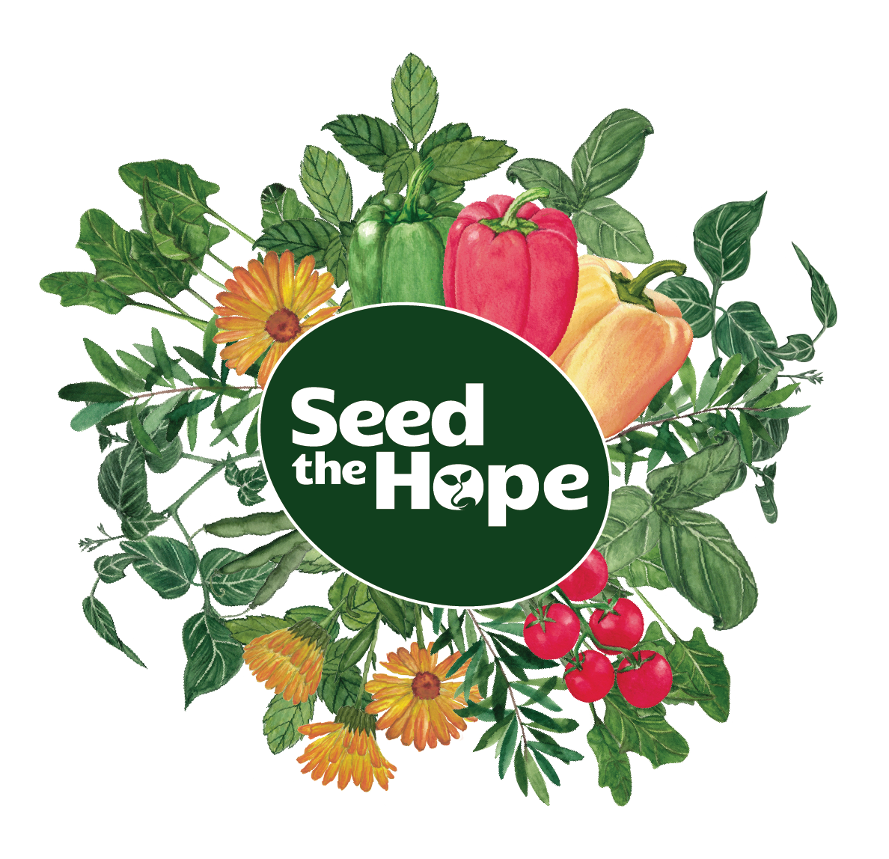
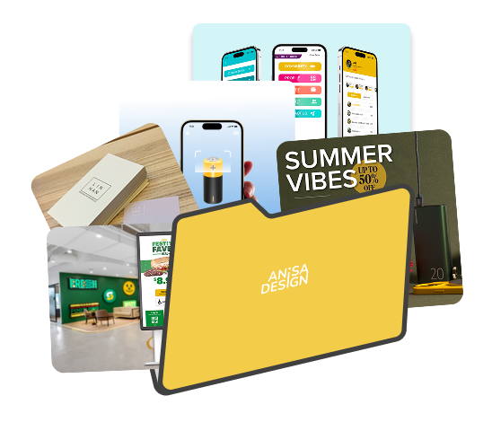
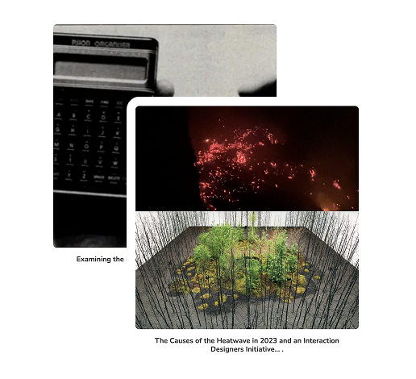

Anisa was the perfect partner to help us refresh our IcebergIQ website which is built on Squarespace.
She thoughtfully listened to our needs, provided many useful recommendations and implemented with her beautiful design aesthetic. We would happily recommend her to other companies looking for a designer.

SOCIAL INITIATIVE
Seed the Hope Founder
A social initiative that uses planting and journaling as gentle therapy for survivors. I designed the brand identity, packaging and service experience. Next is a healing journal pilot.

ABOUT
I'm Anisa,
a Graphic, UX/UI & Web Designer.
My experience spans branding and marketing design, website redesigns, and product interfaces. I’ve worked with startups, nonprofits, and in-house teams across tech, insurance, B2B, and consumer products.

Design Projects
My design projects include UX/UI case studies alongside branding, packaging, product photography, print, and experimental work.

Academic Research
My academic research includes critical writing and analysis developed through university-level coursework.